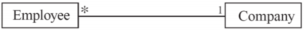
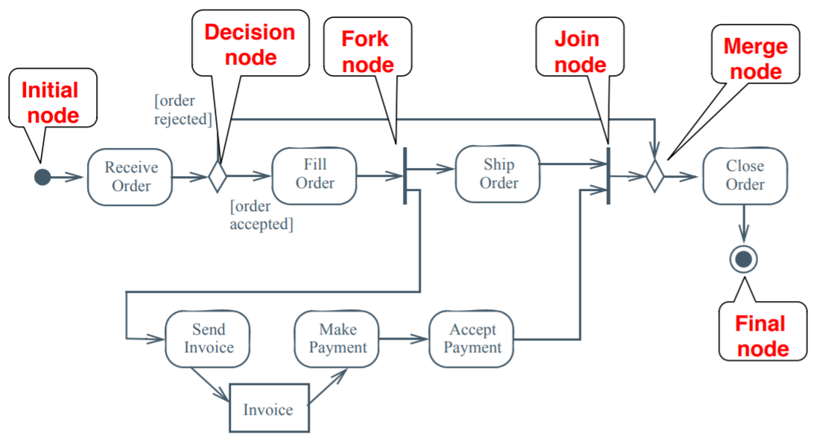
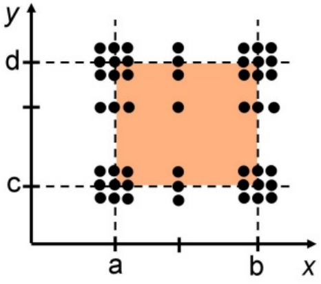

Software Modelling and Design
Matthew Barnes
Contents
Requirements analysis 5
Requirement definition 5
Types of requirements 5
Functional requirement 5
Nonfunctional requirement 5
Design requirement 5
Constraints 5
Assumptions 5
Types of functional requirements 6
Normal 6
Error 6
Safety 6
Security 6
Requirement definition process 6
Define scope 6
Operational scenarios 7
Identify interfaces 7
Writing requirements 8
Level requirements 8
Access verification 8
Access verification (sanity check) 9
Baseline requirements 9
UML 10
Code design 10
Why use UML 10
Models 10
Design representation 10
Dealing with complex problems 10
Hierarchy relationships 10
Modelling in UML 11
Functional modelling (use case diagrams) 11
System boundary 11
Actors 11
Use case 12
Association 12
Generalisation 12
Types of generalisation 12
Include 12
Extend 13
Multiplicity 13
Use case diagram example 14
Object modelling (class diagrams) 14
Classes 14
Associations and multiplicity 15
Labels 15
Association classes 15
Reflexive associations 15
Directionality 15
Qualifiers 15
Generalisations 16
Aggregations and compositions 16
Aggregation 16
Composition 16
Object Constraint Language (OCL) 17
Object modelling (object diagrams) 17
Types of objects 18
Abbott’s Heuristic 18
Dynamic modelling 19
Interaction diagrams 19
Sequence diagrams 19
Communication diagrams 21
State machine diagrams 21
Activity diagrams 23
Model validation and verification 25
Event-B 25
Introduction to Event-B 26
The basics 26
Defining types 27
Relations and functions 27
Ordered pair 27
Cartesian product 28
Relations 28
Domain and range 28
Relational image 28
Partial function 28
Well-definedness 29
Restrictions and subtractions 29
Function overriding 30
Total function 30
Relational inverse 30
Relational composition 30
Symbols 30
Multiplicity to association 34
Classes and associations 35
Primary and secondary carrier sets 36
Class diagrams 36
Class declaration in Event-B 37
Class definition in Event-B 37
AddPlayer 37
AddItem 37
ReadItem 38
WriteItem 38
ChangeRequirement 39
LevelUp 39
EquipItem 39
RemovePlayer 40
RemoveItem 40
Extension refinement 41
Refinement step 41
What can you do with refinement 41
Syntax 41
Machine extension 41
Event extension 41
Examples 42
Queues 43
Injective functions 43
Single queue 43
Multiple queues 44
Modelling state machines 45
What is a state machine 45
Modelling states 45
Invariants relating to the states 46
Partition operator 46
Set comprehension 46
Query event 46
Miscellaneous 47
Test design 47
Testing terms 47
Test cases 47
Equivalence class testing 48
Weak normal ECT 48
Strong normal ECT 49
Weak robust ECT 49
Strong robust ECT 50
Boundary value testing 50
Normal BVT 50
Adding robustness 50
Adding worst-cases 51
Adding robustness + worst-cases 51
Extras 51
Design patterns 51
Get-15 and Tic-tac-toe 52
Design patterns 52
Composite pattern 53
Taxonomies 54
Observer 54
Adapter 54
Requirements analysis
Requirement definition
-
Requirement: Description of a program / what it must do.
-
A requirement must be ‘verifiable’. In other
words, there must be some way to show that the system
follows a requirement.
Types of requirements
Functional requirement
-
What does the program actually do for the user?
-
It should focus on ‘what’, not
‘how’ and the intended purpose of the
system
- Example:
-
“It must allow the user to log in using a login
page”
Nonfunctional requirement
-
Qualities of the program; it doesn’t require it to
function properly.
- Example:
-
“It must be multi-platform”
Design requirement
-
Defines how the system will operate or look.
- Example:
-
“It will use a MySQL database to store users’
details”
-
DO NOT IDENTIFY THESE.
-
They will constrain the design of the system.
Constraints
-
A global requirement that applies everywhere to limit the
freedom you have with your system.
- Example:
-
“Must be able to function on at least 1GB of
RAM”
Assumptions
-
Properties of the environment that are needed for the
system to function properly. The software cannot control
it.
-
Another name for assumptions are ‘facts’ or
‘statements of facts’.
- Example:
-
“Users keep their passwords secret”
-
“If brakes are applied, it takes 3 seconds to
stop”
Types of functional requirements
Normal
-
Regular functionality of the system
- Example:
Error
-
Functionality that handles things when something goes
wrong
- Example:
-
“If there is a failure, make a log file”
Safety
-
Ensures safety of the user (not really applicable to
software)
- Example:
-
“Do not move the elevator when the doors are
open”
Security
-
Functionality that enforces security with things like user
data.
- Example:
-
“Hash passwords; do not store them raw”
Requirement definition process
Define scope
-
This is the overall picture; what are you trying to
achieve?
-
You need to define your:
-
Need - Why are you making this system?
-
Goals - What functionality will it provide to
stakeholders?
-
Business Case - What will the business gain from this
system?
-
High-level operational concepts - How will the product be
used?
-
Stakeholders - Who will be involved in the
development/usage/maintenance of the system?
-
Need - We’re losing business to competitors
-
Goals - To provide services for customers
-
Business Case - The business will stay in competition
-
High-level operational concepts - Customers search and buy
items
-
Stakeholders - Customers, marketing department, IT
department etc.
Operational scenarios
-
Define a bunch of case studies for the system.
-
They should describe the use of the system.
-
Each case study should be a series of interactions.
-
From these case studies, you can quickly gain an
understanding of what’s happening.
-
It will also help generate requirements and avoid leaving
ones out.
-
You can derive case studies by:
-
using similar systems
-
asking the marketing department
-
asking customers
-
User logs in with user ID and password
-
Gets overview of their account
-
Selects current account and is shown transactions
-
There is a difference between a scenario and a use
case:
-
Use case: A list of actions or event steps defining the
interactions between a user and the system to achieve a
goal. It covers pretty much every possibility.
-
Scenario: A documentation of a foreseeable series of interactions
between the user roles and the system to achieve a goal.
Think of it like an instantiation of a use case, like how an
object is an instantiation of a class.
-
A use case has multiple components:
-
Use case name - The name of the use case
-
Participating actors - The stakeholders that participate in this use
case
-
Entry condition - The first thing that happens that fires off the use
case
-
Flow of events - An ordered set of events executed by the system and
the actors.
-
Exit conditions - What happens at the end of the use case
-
Exceptions - Describe all the exceptions of the use case.
-
Quality Requirements - Requirements that are not related to the
functionality of the system.
Identify interfaces
-
How will your stakeholders interact with the system?
- Example:
-
PC, phone, tablet, browser
-
Smartphone app
-
Database management system (e.g. phpMyAdmin)
-
Server
“Fortnite ninja fornite ninja fornite ninja fornite
ninja
ninga”
- Anonymous
Writing requirements
-
This is where you split up your documentation into
individual requirements.
-
Each requirement must be:
-
simple, concise and be a simple thought
-
unambiguous (be clear)
-
Functional: “The system shall”
-
Assumptions: “The user will”
-
Labels (to identify each requirement):
-
ASM1, ASM2, ASM3 ... are assumptions
-
FUN1, FUN2, FUN3 ... are functional requirements
Level requirements
-
Functional requirements can be further split up into
different labels, with things like authentication, accounts,
services etc. depending on your project.
- Example:
-
UACC - Users and accounts
-
AUTH - Authentication
-
SERV - User services
-
UACC1 (FUN1a): The system shall maintain user IDs
-
AUTH1 (FUN1b): The system shall maintain a password with an
ID
-
AUTH2 (FUN2): The system shall provide a login page with
password and ID input boxes.
-
UACC4 (FUN11): The system should ensure that the bank
balance does not go into negative
-
SERV1 (FUN9): At the start of a login session, the system
displays a list of account numbers
Access verification
-
How will you show that a requirement has been met?
-
You can show it in three different ways:
-
Design review (literally just look at the system to see if
it fits the requirement)
-
Test scenario (like a case study earlier on)
-
Additional functionality (kinda like JUnit)
-
The system shall maintain user IDs:
-
Add a function for the tester to view a list of user
IDs
-
The system shall maintain passwords with IDs
-
Inspect the design of the database
-
The system should provide a login page with password and ID
input boxes
-
Use a test scenario to log in
Access verification (sanity check)
- necessary?
- verifiable?
- attainable?
-
clear and understandable?
-
free from implementation bias?
-
If not, rethink that requirement.
Baseline requirements
-
Just talk to everyone to make sure everyone understands and
agrees with the requirements.
UML
Code design
Why use UML
-
UML is a form of abstraction.
-
Abstraction: only showing the important information;
leaving out unimportant stuff.
- Example:
-
UML only shows class hierarchies; does not show
implementation
Models
-
A model is a form of abstraction that represents
something.
-
Models can help us visualise and validate requirements
before actually implementing it.
-
Models are also a good way of showing others how the system
will work.
-
Models can also help spot problems early.
-
There are 4 types of model:
-
Functional model: What are the functions of the system (what does it
do)?
-
Object model: What is the structure of the system (how is it laid
out)?
-
Dynamic model: How does the system react to external events (how does it
react to things)?
-
System model: Object + functional + dynamic (All of the above models
put into one)
Design representation
-
There are three kinds of design representation:
-
Textual: Representing things in pure text
-
Diagrammatical: Using a diagram to represent something
-
Mathematical: Using maths to represent something
Dealing with complex problems
-
There are three ways to deal with complex problems:
-
Divide and conquer: Split problem up into sub-problems that can all be solved
using the same bit of code (common in recursion)
-
Functional decomposition: Split problem up into modules
-
Object-oriented decomposition: Split problem up into classes
Hierarchy relationships
-
There are two kinds of relationships in hierarchy:
-
Part-of hierarchy
-
Like an attribute; an instance of one ‘has’ an
instance of another
- Example:
-
A CPU has registers
-
A ‘Graph’ has a ‘List’ of
nodes
-
Is-kind-of hierarchy (taxonomy)
-
Like inheritance; one is a parent, and the other is a
child
- Example:
-
A blood cell is a type of cell
-
A dog is a type of animal
Modelling in UML
Functional modelling (use case diagrams)
-
Functional modelling models what the system does for the
user.
-
A use case diagram is a generalised description of how a
system will be used
-
Provides an overview of the functionality of the
system
-
Represents stakeholders interacting with the system in
different ways
-
Shows what the system will do, not how it will do it
System boundary
-
A system boundary, or a ‘subject’, is a
rectangle separating stakeholders and the system. It
encapsulates the system away from the actors/users.
Actors
-
A stakeholder interacting with the system. Can be a
stickman shape
- Example:
Use case
-
A bubble that represents an interaction
- Example:
- Log in
- Register
-
Place an order
Association
-
Communication between actor and use case; represented by a
solid line.
- Example:
-
Customer --- ( Log in ) The customer can log in
-
Admin --- ( Change price of item ) The admin can change the price of an item
Generalisation
-
Relationship between one general element to a more specific
element.
-
Represented by an arrow with a triangle at the end of
it
- Example:
-
Waitress → Employee Waitress ‘is an’ Employee

Types of generalisation
Include
-
When a use case uses another use case to function, it has
to <<include>> it.
-
We do this so we don’t have repeated code in two use
cases.
-
Represented with <<include>> above
generalisation arrow.
- Example:
-
( modify orders ) -- <<include>> →
( list order )
-
( display details ) -- <<include>> → (
fetch details )
Extend
-
A use case adds optional behaviour to another use case by
extending it.
-
We do this to add optional behaviour which only occurs
under certain circumstances (for example on
errors/exceptions)
-
Represented with <<extend>> above
generalisation arrow.
- Example:
-
( Invalid username ) -- <<extend>>
→ ( Set username )
Multiplicity
-
A number range indicating one-to-one, one-to-many,
many-to-one or many-to-many relationships.
- Notation:
-
1 One and
only one
-
0..1 Zero or
one
-
M..N From M
to N
-
* From zero
to any positive integer (use this instead of 0..*)
-
0..* From
zero to any positive integer (use * instead)
-
1..* From
one to any positive integer
-
Player 2..* ------------ 0..1 ( Play game )
-
0..1 = A player can either be playing a game or not playing
a game (possibly in the lobby room)
-
2..* = A game must have 2 or more players.
Use case diagram example
Object modelling (class diagrams)
-
Object modelling models the actual classes and entities
used in the system.
-
Class diagrams partition the system into areas of
responsibility (classes) and shows associations between
them.
-
Can be presented at three distinct levels:
-
Conceptual - Represents concepts in project domain
-
Specification - Shows interfaces between components
-
Implementation - Shows classes that correspond directly to
code
Classes
-
A class is represented as a box split in three with a name, attributes and methods.
-
The name goes at the top, the attributes go below the name
and the methods go below the attributes.
-
‘+’ means public, ‘#’ means
protected, ‘~’ means default and ‘-’
means private.
-
Whenever you see ‘:’ followed by a word, that
means type. For methods, that’s a return type. For
attributes, that’s a variable type (e.g. getArea() :
int means that getArea() returns ‘int’).
- Example:
Associations and multiplicity
-
Multiplicity works the same way as use case diagrams

Labels
-
You can label an association to be more specific about what
the association entails.
Association classes
-
Let’s just say you have students and they’re
studying courses. That’s simple; a course can have
many students, and a student can study many courses.
-
But now you want to store what semester they’re in, what optional modules they’ve picked etc.
-
Do we store these attributes in Student or Course? Neither,
because they’re attributes that describe the
association, not the actual classes.
-
Therefore, we can have association classes whose main
purpose is to describe an association.
-
This class will be the ‘bridge’ between Student
and Course. Both of these syntaxes will be valid:
Reflexive associations
-
A class can be associated with itself. Think of it like a
linked list.
-
An example of this would be an employee that manages
another employee.
Directionality
-
Normally, associations are bi-directional (you can go from
one class to another).
-
You can also set associations to uni-directional, meaning
you can go from one class to another, but not back
again.
-
In the example, you can reference a parent’s child,
but you cannot reference a child’s parent. This can be
thought of as a form of abstraction.
Qualifiers
-
Let’s say you wanted to model directories with
files.
-
A directory can have many files, and a file can only belong
to one directory.
-
Seems simple, right?
-
Well, two files in the same directory cannot share a
filename.
-
How do we model this in UML?
-
Given that filename is a property of File, we can make
filename a qualifier.
-
A qualifier is like a primary key; it can’t be
repeated for a given association.
-
This makes the relationship between Directory and File a qualified association.
Generalisations
-
Generalisations in class diagrams have the same concepts as
inheritance in OOP.
-
A generalization set is a labeled group of generalizations
with a common superclass.
-
The label (sometimes called the discriminator) describes
the criteria used in the specialization (in other words, it
describes the inheritance).
-
In the example, ‘AquaticAnimal’,
‘LandAnimal’, ‘Carnivore’ and
‘Herbivore’ are all subclasses, with
‘Animal’ being the superclass.
‘habitat’ and ‘typeOfFood’ are
labels.
Aggregations and compositions
Aggregation
-
Aggregations are special kinds of associations meaning that
one class is “a part of” another class.
-
They are represented with a hollow diamond and the end of
the association line.
-
The semantics of an aggregation is the same as a normal
association; it mainly exists to help people understand how
the system works better.
- Example:
-
You have a Square, and it has a Colour. If you deleted the
Square, the ‘Colour’ may still exist.
Composition
-
A composition is like a strong kind of aggregation, meaning
that one class “has” another class.
-
They are represented with a filled diamond at the end of
the association line.
- Example:
-
You have a ChessBoard with 64 “Place”s, each
representing a square on the board. If you deleted the
ChessBoard, you would also have to delete all 64
“Place”s as there is no reason for them to exist
anymore.
-
You have a Building, and a Building has Rooms. If you
destroy the Building, you also destroy the Rooms.
Object Constraint Language (OCL)
-
OCL is used to define constraints within class diagrams
that are outside the scope of graphical elements.
-
It’s kind of like a programming language, except you
can’t create non-boolean values and you cannot modify
data.
-
Everything made in OCL must be an expression, and it must
always be true, hence why it’s a
‘constraint’.
-
OCL always starts with a curly brace and ends with a curly
brace.
-
OCL’s syntax is very similar to languages like C++,
Java, C# etc.
-
OCL’s variable structure isn’t important; as
long as you express what the constraint is, that’s all
that matters.
- Example:
-
You have a polygon. You must ensure that the last node of
the polygon is in the same place as the first node of the
polygon.
Object modelling (object diagrams)
-
An object diagram is like a class diagram, except it has a
context. Like how an object is an instance of a class, an
object diagram is an instance of a class diagram.
-
Think of it like a use case for the class diagram.
-
Names of objects are in the format
‘object_name:class_name’, for example,
Mark:Employee or THP:Company
-
Names of objects are also underlined to show that they are
objects.
|
Things in class diagrams
|
Things in object diagrams
|
|
Class
|
Object
|
|
Association
|
Link
|
|
Generalisations
|
N/A (they don’t exist in object
diagrams)
|
Types of objects
-
There are three kinds of objects:
-
Entity objects - represents actual information
-
Boundary objects - represents interaction between user and
system
-
Control objects - represents control tasks performed by the
system
-
You can visualise these like in the model-view-controller
architecture (MVC):
-
Model <-> Entity
-
View <-> Boundary
-
Controller <-> Control
Abbott’s Heuristic
-
Abbott’s Heuristic is a way of converting
descriptions into class/object diagrams.
-
Since it’s a heuristic, it’s not perfect. Take
it with a pinch of salt.
|
Part of speech
|
Model component
|
Examples
|
|
Proper noun
|
Instance
|
Alice
|
|
Common noun
|
Class
|
Field officer
|
|
Doing verb
|
Operation
|
Creates, submits, selects
|
|
Being verb
|
Inheritance
|
Is a kind of, is one of either
|
|
Having verb
|
Aggregation
|
Has, consists of, includes
|
|
Modal verbs
|
Constraints
|
Must be
|
|
Adjective
|
Attribute
|
Blue square
|
Dynamic modelling
-
Dynamic modelling models how the system changes and how
units communicate with each other.
Interaction diagrams
-
Interaction diagrams describe patterns of communication
between different parts of the system (objects).
-
An object can interact with another object by sending a
‘message’.
Sequence diagrams
-
A sequence diagram shows communication through a sort of
“timeline”.
-
The horizontal shows interactions, and the vertical shows
time (from top to bottom).
-
Each class has a vertical timeline, called a
‘lifeline’.
-
There are three kinds of lifelines:
-
Phone a friend
-
50/50
-
Ask the audience
-
Just kidding; a lifeline can be whatever you want it to
be.
-
To follow the diagram, you read from the top and work your
way down.
-
Every arrow shows an object interacting with another
object.
-
The first column should be an actor.
-
The second column should be a boundary object.
-
The other columns should be control / entity objects.
-
The user is shown as a stickman (like use case diagrams) on
the left, and every boxed object is a part of the
system.
-
A dotted line represents ‘dataflow’, which
could mean a return value.
-
An asterisk followed by a [ condition ] works the same way
as a while loop; as long as the condition is true, the
command will keep on executing in iterations.
-
This can also be achieved with the ‘loop’
combined fragment.
-
You can also have if statements using the ‘alt’
and ‘opt’ combined fragments:
-
‘alt’ is used for when there are alternate
scenarios, e.g. pay in credit or cash
-
‘opt’ is used for when there is an optional
step, e.g. would you like a bag, yes or no
-
When an arrow points to a class box, it means
‘creation’. A new instance of that object has
been created.
-
When a class’ lifeline has a cross on it, it is
‘deleted’.
Communication diagrams
-
A communication diagram does the same as a sequence
diagram, except it uses numbers instead of graphical
axis.
-
You start from the user and work your way across.
-
The first interaction is marked with ‘1’. The
interactions born from that interaction are labelled
‘1.1’, ‘1.2’, ‘1.3’
etc.
-
Once there are no more interactions marked
‘1.x’, you move onto the second interaction
marked ‘2’ and ‘2.x’ etc.
-
Communication diagrams are more compact than sequence
diagrams, but it can be harder to follow.
State machine diagrams
-
A state machine diagram shows how a system goes through one
state to another in response to external events.
-
A state is a condition satisfied by the attributes of an
object. The system can only be in one state at a time. It is
represented by a rounded rectangle.
-
A transition is a change of state triggered by an event (press
button), condition (sum > 10) or time (after(1s) meaning after 1 second). It is represented by an arrow connecting one state to
another.
-
When a system is turned on/off, that is represented by a thick dot and a thick dot with a
border around it, respectively.
-
An internal transition is a transition that does not change its state.
It’s represented with an arrow going from a state and
ending back at the same state.
-
An activity is an action performed by the system in a specific
state, like ‘count ticks’ or ‘make
noise’. It is accompanied by a label, which is a condition that must be true for the activity
to take place, like ‘entry’ which means
‘when this state has been entered’, or
‘exit’ which means ‘when this state has
been exited’, or ‘do’ which means
‘execute the activity as long as we’re in this
state’.
-
A nested state machine is a special kind of state machine that represents a
state from a higher-level state machine. You can use these
instead of internal transitions if things get too complex
for them. Every state could be represented as a nested state
machine.
-
A substate is like a nested state machine, but it’s a part
of its parent state machine.
Activity diagrams
-
An activity diagram is a bit like a state machine diagram,
except each transition is caused by internal events.
-
Think of it like an advanced flow chart.
-
It differs from a state machine diagram by focusing on
‘control’, ‘behaviour’ and
‘dataflow’ as opposed to the state (set of
attributes) of single abstractions (objects).
-
One of the best things about activity diagrams is that it
helps to visualise concurrent activities (e.g. separate
threads).
-
There are three kinds of nodes:
-
Control nodes - defines a control/deviation in where the activity
goes (special icons)
-
Executable nodes - defines an action to be performed (e.g. make
payment)
-
Object nodes - defines a model (e.g. document)
-
Imagine one of the system’s threads, traversing
across the diagram, going from node to node. That is called
a ‘token’, and they are created at an initial node and ends at a
final node.
-
An initial node is where a token starts. It is represented with a
filled dot.
-
A final node is where a token ends. There are two kinds of final
nodes:
-
An activity final node marks the end of the activity. It is represented with a
filled dot with a border. The ‘goal’ of the
activity has been accomplished.
-
A flow final node marks the end of a token, but other tokens can still
traverse through the activity. The ‘goal’ of the
activity has not yet been accomplished.
-
A fork/join node is a node that either splits up or joins up tokens
respectively. This either creates or stops concurrent
processes. For a join node’s output flow to begin, it
must first receive all possible input tokens.
or
-
A merge/decision node is a node that can either merge tokens together or
decide to direct tokens one way or another given a
condition. A merge node’s output flow can begin as
long as at least one input token is passed through.

-
A swimlane is a partition of the diagram that belongs to a
class.
-
All activities done in a swimlane are being done by their
respective class.
- Example:
Model validation and verification
-
Verification is an equivalence check between the transformation of two
models
-
Validation is the comparison of the model with reality
(requirements should be validated with the client and the
user)
-
A good way to tell the difference is through Boehm’s expression:
-
Validation: Are we building the right product?
-
Verification: Are we building the product right?
-
Requirements validation involves several checks:
-
Correctness (represents client’s view of the
system?)
-
Completeness (every scenario is described?)
-
Consistency (no components contradict each other?)
-
Ambiguity (model describes one system, not many?)
-
Realistic (model can be implemented?)
-
You should also check for:
- Syntax
-
Consistent naming
-
No dangling associations (points to nowhere)
-
Missing classes (mentioned but not defined anywhere)
Event-B
Introduction to Event-B
The basics
-
Event-B is a method of software development based off of
B-method, and is considered an ‘evolution’ of
B-method.
-
Event-B notation uses set theory and predicate logic for
describing software.
-
We can describe systems and what they can do, for
example:
-
Let’s just say we have a system that monitors people
entering and leaving the building.
-
We can model that like this in Event-B:
|
context BuildingContext
sets USER
end
machine Building
variables register in out
invariants
inv1: register USER // set of registered users
inv2: register = in  out // all registered users must be out // all registered users must be
// either inside or outside
inv3: in out = {} // no user can be inside and outside
initialisation in, out, register := {}, {}, {}
events
|
Enter
any s where
s  out out  register register
then
in := in {s}
out := out \
{s}
end
|
Leave
any s where
s in register
then
in := in \
{s}
out := out {s}
end
|
|
|
|
-
Let’s go over the keywords for this:
|
Keyword
|
Example
|
Explanation
|
|
context
|
context BuildingContext
|
Defines the scope of the machines/systems, e.g.
everything we describe is within the context of
the building, namely,
“BuildingContext”.
|
|
sets
|
sets USER
|
Defines the types of groups within the whole
system, e.g. there is a “USER” group
within the building’s context.
|
|
end
|
end
|
Simply marks the end of a clause, for example
the ‘end’ in ‘context ... sets
... end’ marks the end of the clause
describing the context of the system. It is also
used with events.
|
|
machine
|
machine Building
|
Marks the start of a clause that describes a
machine within the context of the system, e.g.
there is a “Building” machine in the
building’s context.
|
|
variables
|
variables register in out
|
Defines the variables within a machine, e.g.
‘register’, ‘in’ and
‘out’ are variables within the
‘Building’ machine.
|
|
invariants
|
inv1: register USER
|
Invariants are rules that the variables must
abide by, e.g. the ‘register’
variable must always be a subset of
‘USER’.
|
|
initialisation
|
initialisation in, out, register := {}, {}, {}
|
Defines variables at the start of the
machine’s lifetime, e.g. ‘in’,
‘out’ and ‘register’
variables will all be empty sets at the
start
|
|
events
|
events Enter ... Leave ...
|
Marks the start of the definition of events
related to a machine, e.g. ‘Enter’
and ‘Leave’ are events defined in
the machine ‘Building’.
|
Defining types
-
You can define the types of variables in two ways like
so:
-
With ‘w’ being the set of variables of a
certain type ‘T’.
- Example:
-
Here, we define that the elements of the set {3, 4, 5} are
all integers.
Relations and functions
Ordered pair
-
An ordered pair is a tuple with two elements.
-
It can represent a domain element being mapped to a range
element: (x, y)
-
They are usually written like this:
Cartesian product
-
The cartesian product gives you every possible ordered pair
between two sets.
-
For example,
-
Given that x is within X and y is within Y
-
Therefore, you can use the cartesian product to express the
‘typing’ of an ordered pair.
-
For example,
-
Where ‘Z’ is the set of all integers.
Relations
-
A relation is a set of ordered pairs.
-
They allow mapping from a set of elements to another,
without the restrictions of a function.
-
The notation for a relation is this:
-
So when you see the symbol ‘
 ’, just think “a set of all possible
relations/mappings between these two sets”
’, just think “a set of all possible
relations/mappings between these two sets”
Domain and range
-
The domain is the set of all the elements of the first part
of a relation.
-
The range is the set of all the elements of the second part
of a relation.
-
To specify the domain of a relation, you write this:
-
To specify the range of a relation, you write this:
Relational image
-
‘Relational image’ simply refers to mapping
input elements through a relation and outputting a set of
output results.
-
It is written like this:
-
Where ‘R’ is the relation and ‘A’
is a set of input elements.
-
Think of it as Event-B’s version of a
function/relation call, except you can input a set of input
elements and receive a set of output elements.
Partial function
-
A partial function is like a normal function, except not
all of the domain elements have to map to an element of the
range.
-
A partial function is defined like this:
-
So when you see an arrow with a line through it, think
“set of functions where not all the domain elements
map to the range elements”.
Well-definedness
-
A function is well-defined if for each x there is a unique
y such that f(x) = y.
-
Well-definedness is one of the criterion for a function: no
well-definedness, no function.
-
An example of a function that is not well-defined is the
following:
-
f(x) = the first digit after the decimal point
-
so therefore f(1) = 0 because 1.0000
-
but also f(0.9999...) = 9 because 0.9999...
-
But 0.999.... and 1 are the same, so that means the value
‘1’ has two outputs, which makes f(x) not
well-defined.
Restrictions and subtractions
-
You can restrict or subtract domains and ranges. This means
either filter out domains/ranges to leave the ones you want,
or getting rid of domains/ranges that you don’t
want.
|
Type of restriction or subtraction
|
Syntax
|
Explanation
|
Example
|
|
Domain restriction
|
A ◁ R
|
Filter out domain elements, leaving only the
domain elements specified.
|
{1,3} ◁ {1→10,2→20,3→30} = {1→10,3→30}
|
|
Domain subtraction
|
A ⩤ R
|
Remove specified domain elements.
|
{1,3} ⩤ {1→10,2→20,3→30} =
{2→20}
|
|
Range restriction
|
R ▷ B
|
Filter out range elements, leaving only the
range elements specified.
|
{1→10,2→20,3→30}▷ {10,30} = {1→10,3→30}
|
|
Range subtraction
|
R ⩥ B
|
Remove specified range elements.
|
{1→10,2→20,3→30}⩥ {10,30} = {2→20}
|
-
By using these, you can filter out or remove certain domain
/ range values.
Function overriding
-
You can override a function f with function g by using this
notation:
-
By doing this, you’re overwriting / adding new
mappings into a function.
- Example:
-
{ 1 → 10, 2 → 20 } { 3 → 30, 1 → 50 } = { 1 → 50, 2 → 20, 3 → 30 }
Total function
-
A total function is a well-defined partial function.
-
It’s what you’d traditionally know as a
function.
-
It’s represented like this:
Relational inverse
-
A relational inverse is the same as an inverse function; it
swaps the domain and the range.
-
If you have a relation R ∈ S ↔️ T, then an
inverse relation is R-1.
-
This works for functions too, as long as it’s
injective (if it’s not surjective, then the function
inverse will be a relation / partial function).
Relational composition
-
Like function composition, relational composition is the
process of performing multiple relations, one after another,
on an input.
-
If you had relations Q ∈ S ↔️ T and R
∈ T ↔️ U, you could create a composition of
these by writing Q ; R, where Q ; R ∈ S ↔️
U.
Symbols
-
All the symbols for relations/functions can be found
here:
|
Symbol
|
Meaning
|
Example / Illustration
|
|

|
Ordered Pair
Not a relation or a function, just one pairing
from one element to another.
|

|
|

|
Cartesian product
Every single possible pairing from elements of
one set to another.
|

|
|
Relations
These kinds of mappings can map from one domain
element to multiple range elements.
|
|

|
Normal relation
A relation of any mapping from one set to
another. Think of this as simply a subset of the
cartesian product.
|

|
|

|
Total relation
Like a normal relation, but all of the domain
is mapped to something.
|

|
|

|
Surjective relation
Like a normal relation, but all of the range is
being mapped by something.
|

|
|

|
Total surjective relation
Like a normal relation, but all elements from
the domain map to all elements in the
range.
|

|
|
Functions
Like relations, but you cannot map one domain
element to multiple range elements.
|
|

|
Partial function
Not all of the domain has to be mapped.
|

|
|

|
Total function
Maps all elements of the domain to an element
of the range.
|

|
|

|
Partial injection
Not all elements of the domain have to be
mapped, but the ones that are need to map to
unique range elements.
|

|
|

|
Total injection
All elements from the domain need to be mapped,
and they all need unique range elements.
|

|
|

|
Partial surjection
Not all domain elements need to be mapped, but
all elements from the range need to be mapped
from something.
|

|
|

|
Total surjection
All elements from the domain need to be mapped,
and all elements from the range need to be
mapped by something.
|

|
|

|
Bijection
All elements from the domain need to be mapped,
all the elements from the range need to be
mapped and no two domain elements should map to
the same range element.
|

|
Multiplicity to association
-
Given the multiplicity [x] ---- [y], where [x] is a multiplicity like 0..1 or *, and the same with [y], then the following table can be used to look up the type
of association with this multiplicity:
|
|
0..1
Injective
|
1
Injective + surjective
|
1..*
Surjective
|
*
None
|
|
0..1
Partial function (functional)
|
Partial injective function
|
Partial injective + surjective function
|
Partial surjective function
|
Partial function
|
|
1
Total function (totality + functional)
|
Total injective function
|
Total injective + surjective function (bijection)
|
Total surjective function
|
Total function
|
|
1..*
Total relation (totality)
|
Total injective relation
|
Total injective + surjective relation
|
Total surjective relation
|
Total relation
|
|
*
Partial relation (none)
|
Partial injective relation
|
Partial injective + surjective relation
|
Partial surjective relation
|
Partial relation
|
-
Like how ‘*’ means ‘none’,
‘0..n’ also means ‘none’, and
‘n..m’ is equivalent to
‘1..*’.
-
If an association is not ‘total’, it is
‘partial’ and vice versa.
-
If an association is not ‘functional’ (a
function), it is a relation, and vice versa.
-
For associations like “partial injective + surjective
relation”, there’s no such symbol that
represents that. When that happens, you can take the inverse
and model that, which would be “total function”,
which is represented with ‘→’.
-
Additionally, you can remember this diagram, with class S
on the left and class T on the right:
-
For more information on this, read this.
Classes and associations
-
In Java, when you create a class, you put its attributes
inside the class file, where the class is declared and
defined.
-
However, in Event-B, you create a base class and you add
attributes by initialising relations whose domain is the
class and the range is the attribute.
-
These attributes can be referenced through relations.
-
So, effectively, the attributes of a class and the class
itself are defined separately in Event-B, but can still
logically be thought of as “one belonging to the
other”.
Primary and secondary carrier sets
-
In Event-B, there are two types of carrier sets: primary
and secondary.
- Primary:
-
These are the objects that actually exist; Event-B handles
management of these (creation, modification, deletion
etc.)
-
These are attributes for the primary carrier sets. You
can’t actually initialise them; they must belong to an
object.
Class diagrams
-
In a class diagram, a good convention is to make object
names ‘lowercase’ and class names
‘UPPERCASE’.
-
Let’s create an example. Let’s say you have a
character in an MMORPG, and you are a certain level. There
are items you want to equip that have a ‘level
requirement’, and you must be a certain level to equip
it. Each item also has a description, which we will call
‘DATA’.
-
We can model this in a class diagram first before jumping
head-first into Event-B:
-
From this class diagram, we can see that
‘player’ and ‘item’ are set objects
containing all the ‘PLAYER’s and
‘ITEM’s, respectively.
-
‘ITEM’ and ‘PLAYER’ are primary
carrier sets so we introduce set objects for them.
‘DATA’ and ‘LEVEL’ are secondary
carrier sets, so we do not.
-
An ‘ITEM’ has two attributes: the data
(description) and its level requirement.
-
A ‘PLAYER’ has two attributes: their level, and
the items they’ve equipped (for this model, a player
can only equip one item. This is to keep the
‘equipped’ relation simple).
-
Another interesting thing is that all items must have a
description and a requirement, and all players must have a
level. However, not all players must have an equipped item,
which means the ‘equipped’ relation must be a
partial function (not all players map to an item).
Class declaration in Event-B
-
Now that we have a general idea of what to do, we can start
modelling this system in Event-B:
|
sets ITEM DATA PLAYER
constants LEVEL
axioms LEVEL = 1..99
variables item, player, data, requirement, level,
equipped
invariants
item ⊆ ITEM
player ⊆ PLAYER
data ∈ item → DATA
requirement ∈ item → LEVEL
level ∈ player → LEVEL
equipped ∈ player ⇸
item
initialisation
item := {} player := {} data := {} requirement
:= {} level := {}
|
-
In the code above, we have created 3 types:
‘ITEM’, ‘DATA’ and
‘PLAYER’. Note that ‘LEVEL’ is a
constant, and we have set an axiom for ‘LEVEL’
to be between 1 to 99 (1..99 means 1 to 99 inclusive). This
adds validation to ‘LEVEL’, ensuring that it
doesn’t reach strange values (like negative).
-
The attributes of ‘ITEM’ and
‘PLAYER’ are stored as ‘data’,
‘requirement’, ‘level’ and
‘equipped’. They are all functions that map
items/players to their respective attributes.
Class definition in Event-B
-
So now we have a good base in Event-B, but we need to
define events so that things can actually happen.
AddPlayer
-
When a player is created, they must have a level. Usually,
a player starts at level 1, but for this example, a player
can start at any level. Therefore, we need a level parameter
as well as a player parameter.
-
Additionally, when a player is created, they don’t
have any items equipped, so that parameter isn’t
needed.
|
AddPlayer ≙
any p, l where
p ∈ PLAYER
p ∉ player
l ∈ LEVEL
then
player := player ∪ {p}
level(p) := l
end
|
AddItem
-
When an item is created, they must have a requirement level
and a description. Therefore, we need three parameters: the
item, the requirement level and the data.
|
AddItem ≙
any i, l, d where
i ∈ ITEM
i ∉ item
d ∈ DATA
l ∈ LEVEL
then
item := item ∪ {i}
data(i) := d
requirement(i) := l
end
|
ReadItem
-
When a player reads an item, they’re trying to get
its description. However, a player can only see its
description if it meets its level requirement
(unconventional for an MMORPG, but we can still model
it).
-
In Event-B, there is no ‘return’ statement.
Instead, you have a return parameter.
-
Therefore, we’ll need three parameters: the item, the
player and the result.
-
Notice that the ‘result’ parameter is being set
with the conditions in the ‘where’ clause. The
reason why we don’t do this in the ‘then’
clause is because nothing is being explicitly
changed/set.
|
ReadItem ≙
any i, p, result where
i ∈ item
p ∈ player
level(p) ≥ requirement(i)
result = data(i)
end
|
WriteItem
-
When a player writes to an item, they change its
description as long as they meet its level requirement
(again, unconventional for an MMORPG, but it makes good
Event-B examples).
-
WriteItem requires the item to change, the player to make
the change and the data to set the item to.
|
WriteItem ≙
any i, p, d where
i ∈ item
p ∈ player
d ∈ DATA
level(p) ≥ requirement(i)
then
data(i) := d
end
|
ChangeRequirement
-
Perhaps an admin wants to change the level requirement of
an item, or maybe the player upgrades the item and its
requirement increases.
-
When changing the item requirement, we need to make sure
that the item’s requirement doesn’t exceed the
level of the player who has this item equipped.
-
We need two parameters: the item and the level to change it
to.
-
Since only one item can be equipped by one player, we can
use the inverse function ‘equipped-1’.
|
ChangeRequirement ≙
any i, l where
i ∈ item
l ∈ LEVEL
equipped-1;level(i) ≥ l
then
requirement(i) := l
end
|
LevelUp
-
Levelling up is simple; we just need to make sure the
player doesn’t exceed the maximum level.
-
To check if the player’s level won’t exceed the
maximum, we could check if the level of the player plus one
is less than 99. However, what if the maximum level
changes?
-
If the level value goes over the maximum, it will stop
being of type ‘LEVEL’ (because the definition of
being of type ‘LEVEL’ means being within the
appropriate range), therefore we can check if it exceeds the
maximum level by checking if the level plus one is still of
type ‘LEVEL’. If it is, then the player’s
level is still within the correct range after levelling
up.
-
We only need one parameter: the player.
|
LevelUp ≙
any p where
p ∈ player
level(p) + 1 ∈ LEVEL
then
level(p) := level(p) + 1
end
|
EquipItem
-
When a player equips an item, they must meet its level
requirement.
-
We need two parameters: the player and the item.
|
EquipItem ≙
any p, i where
p ∈ player
i ∈ item
level(p) ≥ requirement(i)
then
equipped(p) := i
end
|
RemovePlayer
-
Let’s just say some player hacked the game and needs
to be banned (removed) by an admin.
-
When we remove the player, we need to check the functions
going to and from ‘player’. It wouldn’t
make sense for an item to be equipped by a player that
doesn’t exist.
-
The relations that interact with players are
‘equipped’ and ‘level’.
-
For this event, we only need one parameter: the player to
be removed.
|
RemovePlayer ≙
any p where
p ∈ player
then
player := player \ {p}
equipped := {p} ⩤ equipped
level := {p} ⩤ level
end
|
RemoveItem
-
Let’s just say an item was deemed too OP and needs to
be removed in-game by an admin.
-
When we remove the item, we need to check the relations
going to and from the items, like in
‘RemovePlayer’.
-
The relations that interact with the items are
‘requirement’, ‘data’ and
‘equipped’.
-
For this event, we only need one parameter: the item to be
removed.
|
RemoveItem ≙
any i where
i ∈ item
then
item := item \ {i}
requirement := {i} ⩤ requirement
data := {i} ⩤ data
equipped := equipped ⩥ {i}
end
|
Extension refinement
-
Refinement is the process of:
-
improving the functionality being modelled, or
-
explain how some purpose is achieved
Refinement step
-
A refinement step is when we remodel a model M1 into
M2.
-
M1 is an abstraction of M2
-
M2 is a refinement of M1
-
We can perform lots of refinement steps to go from M1 to M2
to M3 to M4 etc.
What can you do with refinement
-
With extension refinement, you can:
-
Add additional variables and invariants
-
Extend existing events to act on additional variables
-
Add new events to act on additional variables
-
So you can think about refinement in the same way that
classes inherit each other in OOP languages.
Syntax
Machine extension
-
To show that machine M2 refines another machine M1, you
write:
|
machine M2
refines M1
variables ...
invariants ...
events...
|
-
When you do this, all the invariants are inherited from M1,
however, you need to state the variables you need from M1
again in M2.
Event extension
-
To extend events, you can write:
|
E2 extends E1 ≙
any <additional parameters> where
<additional conditions>
then
<additional actions>
end
|
-
Where E1 is an event in M1 and E2 is a child event of E1 in
M2.
-
If they both have the same name, it’s fine to write
“event extends event”, and the assumption will
occur where there is a parent event of the same name in the
parent machine.
Examples
|
context BuildingContext
sets USER
end
machine Building1
variables register in out
invariants
inv1: register USER // set of registered users
inv2: register = in out // all registered users must be
// either inside or outside
inv3: in out = {} // no user can be inside and outside
initialisation in, out, register := {}, {}, {}
events
|
Enter
any s where
s out register
then
in := in {s}
out := out \
{s}
end
|
Leave
any s where
s in register
then
in := in \
{s}
out := out {s}
end
|
|
|
|
-
We have a building, and people can come in or come out. We
store who is in the building and who is outside the
building.
-
What if we wanted to model someone going into a certain
room, say, room 2B?
-
We could use extension refinement to extend this building
to model this:
|
machine Building2
refines Building1
variables register in out room2B
invariants
inv1: room2B in // Everyone in 2B must be in the building
initialisation in, out, register, room2B := {}, {},
{}
events
|
Enter2B ≙
any s where
s in register
then
room2B := room2B
U {s}
end
|
Leave2B ≙
any s where
s room2B
then
room2B := room2B
\ {s}
end
|
|
|
|
Queues
-
In Event-B, to add a queue, you have to implement one
yourself.
-
To create a queue, you need injective functions.
Injective functions
-
An injective function, also known as a one-to-one function,
is a function where each element in the domain maps to one
unique element in the range.
-
For example, if you have an injective function f(x), you
cannot have f(x1) = y and f(x2) = y as well, for x1 !=
x2.
-
An injective function can be represented like this:
-
A total injective function is an injective function where
every element of the domain maps to an element of the range.
It is represented like this:
Single queue
-
On a queue, elements have a position. In queues in Event-B,
the smallest position element will be dequeued next, and the
biggest position element was the most recently added
element.
-
Therefore, we can model a queue like this:
-
We can model this with these invariants:
|
inv1: element ⊆ ELEMENT
inv2: position ∈ element ↣
POSITION
|
-
Now, we can add events to enqueue and dequeue
elements:
|
event EnqueueJob ≙
any e p
where
e ∉ element
p ∈ POSITION
∀k· k ∈ element
⇒ p > position(k) // p is the highest position of all elements in
the queue
then
element ≔ element U {e}
position(e) ≔ p
end
|
|
event DequeueJob ≙
any e
where
e ∈ element
∀k· k ∈ element
⇒ position(e) ≤ position(k) // e is the lowest positioned element of the whole queue
then
element ≔ element \ {e}
position ≔ {e} ⩤ position
end
|
Multiple queues
-
To handle multiple queues, each element must be linked to
one queue. Elements can still have positions, but two
elements in the same queue cannot have the same
position.
-
An invariant for this would be:
|
inv1: e_queue ∈ element → queue
|
-
Before, we had an invariant that linked elements to a
single position.
-
We need to add something extra to make sure no two
positions on the same queue is the same for two
elements:
|
inv2: ∀e,k·e ∈ element ∧
k ∈ element ∧
e ≠ k ∧
e_queue(e) = e_queue(k)
⇒ position(e) ≠ position(k)
|
-
Now we can add the events:
|
event QueueJob ≙
any e p q
where
e ∉ element
p ∈ POSITION
q ∈ queue
∀k· k ∈ element ∧
e_queue(k) = q ⇒ p > position(k) // p is the highest position of all elements in
the queue
then
element ≔ element U {e}
position(e) ≔ p
e_queue(e) ≔ q
end
|
|
event DequeueJob ≙
any e, q
where
e ∈ element
q ∈ e_queue(e)
∀k· k ∈ element ∧
e_queue(k) ⇒ q > position(e) ≤
position(k) // e is the lowest positioned element of the
whole queue
then
element ≔ element \ {e}
position ≔ {e} ⩤ position
e_queue ≔ {e} ⩤ e_queue
end
|
Modelling state machines
What is a state machine
-
A state machine is a model that has distinct states
depending on what they’re doing.
-
There are also transitions from one state to another.
-
For example, a state machine for a switch could be ON and
OFF, and a transition for that could be toggling (pressing)
the switch.
Modelling states
-
You use sets to model states:
|
in ⊆ user \\ users in the ‘in’ state
out ⊆ user \\ users in the ‘out’ state
|
-
Then you would use events to represent the transitions
between states:
|
Enter ≙
any u where
u ∈ out
u ∉ in
then
in := in U {u}
out := out \ {u}
end
|
|
Leave ≙
any u where
u ∈ in
u ∉ out
then
in := in \ {u}
out := out U {u}
end
|
Invariants relating to the states
-
To make sure you cannot be in two states, add
invariant:
-
To make sure you cannot have the same element in two
states.
Partition operator
-
The partition operator allows you to partition a set
without making all the invariants and sets yourself. Think
of it like syntactic sugar.
-
The syntax goes like this:
-
partition(S, T1, ... Tn)
- Where:
-
S is the set with all the elements
-
T1 up to Tn are all the partitions
-
S = T1 U ... U Tn
-
Ti ∩ Tk = Ø each i,k where i != k
-
You can use this to create state machines in Event-B
easily.
-
Example using the in-out state machine like above:
-
partition(user, in, out)
Set comprehension
-
The set of elements x that satisfy a predicate:
-
{ x | x ∈ X }
-
So, for example, the set of players whose levels are over
level 10:
-
{ p | p ∈ players ∧ level(p) > 10 }
-
It’s a way of getting a set whose elements satisfy a
predicate.
Query event
-
A query event is an event that fetches data from the model
and returns a result. It doesn’t affect the
model.
-
For example, getting the set of friends of a user:
|
GetFriends ≙
any u, result where
u ∈ users
result = { f | f ∈ users
∧ f ∈ friends[{u}] }
end
|
Miscellaneous
Test design
Testing terms
-
Error: When a person makes a mistake and the system does not
perform the way you intended it to.
-
Fault: The actual part of the system that causes it to fail,
also known as a “defect” or a
“bug”.
-
Failure: When the system does not function the way it should due
to a fault.
-
To remember this, think of this sentence: “You make
an error while writing the program, leaving a fault in the code and therefore it results in a failure”.
-
Not all faults lead to failures. This is because some use
cases do not encounter the conditions for any bugs, so the
system works fine for that use case.
Test cases
-
We test by giving a program a bunch of inputs, and then
expecting certain outputs. If the outputs are what we
expected, the test cases pass. If not, they fail.
-
Test cases can be laid out like this:
|
ID, date
|
Module / unit name
|
Test specification
|
Expected result
|
Pass?
|
|
|
|
|
|
|
-
You could also add “Actual output” and
“Observations” on a combined test plan &
report.
-
You need positive test cases and negative test cases.
-
Positive: If the program does this as expected, test
succeeds
-
Negative: If the program fails here / throws exception,
test fails
Equivalence class testing
-
Equivalence class testing is testing using equivalence
classes.
-
Equivalence classes are sets where all of the elements in
that set are equivalent to each other in some way.
-
For example, let’s say you had a game where if your
health is 3 points or lower, you’re on “low
health”.
-
Therefore, there are two equivalence classes: low health
and normal health, and the inputs “2 points” and
“3 points” are in the same equivalence class,
because they’re categorised the same in the given
condition.
-
The whole point of equivalence class testing is to test
each value from each equivalence class, so we can
ensure:
- Completeness
-
Non-redundancy
-
Minimise testing effort
-
Equivalence classes can be put on a graph for a visual
representation. For example, for a program with two inputs,
you could have this graph for equivalence classes:
-
The areas between the dotted lines (shaded in parts)
represent equivalence classes, and the letters
‘a’, ‘b’, ‘c’,
‘d’ etc. all represent the bounds of the
ranges.
Weak normal ECT
-
Weak normal ECT relies on the “single fault
assumption”, which states that failures are rarely the
result of two other faults simultaneously occurring.
-
Therefore, we only need one test per equivalence
class:
-
Notice that for each equivalence class, there’s a
minimum of one test case.
-
To find the number of test cases in weak normal ECT, find
the equivalence relation with the biggest number of
equivalence classes, and then pick that number, for example
in the picture above x1 has 2 ECs, x2 has 3 ECs, so we need
3 test cases.
Strong normal ECT
-
Strong normal ECT relies on the assumption that one error
may cause lots of faults.
-
Therefore, we need at least one test case on every possible
equivalence class relation.
-
More formally, there is a test case for each element of the
cartesian product of the equivalence relation:
-
Notice how for every block made up of two equivalence
classes, there is a test case. If there were three
variables, you’d need a test case for every cuboid
made up of three equivalence classes.
-
To get the number of test cases, multiply the cardinality
of all the equivalence classes with each other, for example
there are 2 ECs in x1, 3 ECs in x2, 2 * 3 is 6, so we need 6
test cases.
Weak robust ECT
-
Weak robust ECT is the same as weak normal ECT, except we
have invalid values, too.
-
For each variable, we have at least one invalid value on
either sides of the valid ECs; all the rest are valid:

-
Notice that for variables x and y, both invalid ECs on
either side have test cases.
-
The number of test cases is:
-
-
Where ci is the number of out-of-range cases for a variable i.
Usually, it’s 2.
Strong robust ECT
-
Strong robust ECT is the same as strong normal ECT except
we have invalid values, too; much like how weak robust ECT
is to weak normal ECT.
-
We basically fill in every possible block with a test
case.
-
More formally, we produce test cases for all valid and
invalid elements of the cartesian product of all the
equivalence classes:
-
Notice how every space is occupied by a test case, even the
invalid ones.
-
The number of test cases in this is:
-
-
Which means the product of all Si + ci.
Boundary value testing
-
Instead of the test cases being right in the middle of an
equivalence class, boundary value testing tests the
boundaries of the equivalence classes.
Normal BVT
-
With normal BVT, you pick all values on the boundaries,
values right next to the boundaries and a value in the
middle of the range.
Adding robustness
-
Robustness means that you also include invalid values right
next to the boundary.
Adding worst-cases
-
Worst-cases means that you include values right in the
corner of the boundaries.
Adding robustness + worst-cases
-
You can add them both to be extra secure.

Extras
-
There are other ones too, like:
-
Special value testing: using domain knowledge to add special values and finding
corresponding boundaries for internal variables (white-box
testing)
-
Random testing: randomly choosing inputs
Design patterns
Get-15 and Tic-tac-toe
-
Get-15 is a game where two players pick numbers, and as
soon as one person has a subset of numbers that adds up to
15, they win.
-
Tic-tac-toe is a game where two players take turns to draw
crosses and circles in a 3 x 3 grid, and the first one to
make a line of their shape wins.
-
These two games are actually identical, if you put Get-15
into a magic square (a square where all rows/columns add up
to 15):
-
Therefore, the same strategies for tic-tac-toe can be
applied to Get-15 and vice versa.
Design patterns
-
A design pattern is a reusable template for solving a
recurring design problem based on design knowledge and is
modifiable.
-
A design pattern should have low coupling (modules can be
replaced easily) and high cohesion (one module should do one
job only), clear dependencies and explicit
assumptions.
-
Design patterns help by providing a shared vocabulary to
designers and provide examples of modifiable designs.
-
The four main elements of a design pattern are:
-
A unique name
-
A problem description that describes situations where the pattern can be
used
-
A solution described as a set of collaborating classes and
interfaces
-
A set of consequences describing trade-offs and alternatives relevant to the
design goals in question
-
The three types of design patterns are as follows:
-
Structural patterns (adapter, decorator etc.)
-
Reduce coupling between two or more classes
-
Introduce an abstract class to enable future
extensions
-
Encapsulate complex structures
-
Behavioural patterns (observer, iterator, state etc.)
-
Allow a choice between algorithms and the assignment of
responsibilities to objects (who does what)
-
Characterize complex control flows that are difficult to
follow at runtime
-
Creational patterns (factory, singleton, prototype, builder
etc.)
-
Allow to abstract from complex instantiation
processes
-
Make the system independent from the way its objects are
created, composed and represented.
Composite pattern
-
Software system: A software system consists of subsystems which are either
other subsystems or collection of classes
-
Software lifecycle: A software lifecycle consists of a set of development
activities which are either other activities or a collection
of tasks
-
These two sound similar. What’s the same about
them?
-
They both follow the composite pattern, where a structure
can be split up into two: a composite and a leaf.
-
It’s easier to visualise the composite pattern like a
tree. Here is a tree representation of a software
system:
-
A more formal representation of the composite pattern is
this:

Taxonomies
-
A taxonomy is simply a special kind of something, for
example in a business, “Equipment”,
“Facility”, “Fund” and
“Organisation” are special kinds of
“Resource”s and are therefore taxonomies.
Observer
-
An observer is a class that is registered with a
subject.
-
When the subject changes, the observer is notified and
changes accordingly.
-
The observer is part of the MVC architectural pattern, as
the ‘view’.
Adapter
-
An adapter pattern converts the interface of a class to
another interface so it can work with other classes.
-
Adapter patterns are mostly used to allow two incompatible
classes to work together.
-
It’s very similar to its hardware counterpart, and
it’s easier to think of through using one as an
example.
-
Let’s just say you travel to America, bringing some
electronics from the UK. The plug in America is different
from the one in the UK, so you can’t plug it in.
Therefore, you’d need an adapter to convert the UK plug for the American sockets.
-
This same concept is used in code, and is called the
adapter pattern.
-
Naturally, this pattern only works for two pieces of code
with the same base functionality (basically, they need to do
the same thing, otherwise you can’t adapt one to be
like the other).
-
The adapters can also be used as a “wrapper”,
which is a class where you put the original object in and
the wrapper allows it to act like another interface.